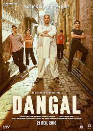

bahubali

Main leads of movie
- prabhas
- rana Daggubati
- anushka shetty
- tamanna bhatiya
Baahubali: The Beginning is a 2015 Indian Telugu-language epic action film co-written and directe S. Rajamouli, and produced by Shobu Yarlagadda and Prasad Devineni under Arka Media Works. The film was produced in Tollywood and was filmed in both Telugu and Tamil languages simultaneously. It features Prabhas in a dual role alongside Rana Daggubati, Anushka Shetty, Tamannaah Bhatia, Ramya Krishna, Sathyaraj, and Nassar. The first of two cinematic parts, the film follows Sivudu, an adventurous young man who helps his love Avantika rescue Devasena, the former queen of Mahishmati who is now a prisoner under the tyrannical rule of king Bhallaladeva. The story concludes in Baahubali 2: The Conclusion. The film's story was written by Rajamouli's father V. Vijayendra Prasad, who randomly told him a story about Sivagami, a woman who carries a baby in her hand while crossing a river, and a few years later about Kattappa, which intrigued Rajamouli.
dangal
Main leads of movie
- Amir khan
- Fatima sana
- Sanya malhotra
- suhani bhatnagar
- Shakshi tanwar
KGF